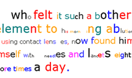

|
Brian Kim Stefans interview, page 4 GB: Did they influence your work? How? BS: In general, any web art work that impresses me with its simplicity and the profundity of its effects influences me, or at least frightens me. I'm interested in some conceptual projects, like the mouchette site, which is not quite "simple" (though it has a conceptual cleanliness). However, that's generally the type of thing I don't do, image laden stuff that tells a story. I'm less interested in projects that involve infiltrating listservs and creating web avatar personas—mez might be one of these, or Alan Sondheim—since they seem too overtly saturated by "theory" (tugging on the aprons strings of deconstruction) and the writing is usually less interesting than both what you find in books and what you find on, say, Dagmar Chili Pitas. The surface effects can be rich and, in a sense, "timely," but the fact that digital technology allows one an infinite repetition of effects is already plainly visible in the movies and in electronic music. To make the social component of this phenomenon visible—to use that word again—needs to be explored in ways that involve idioms that are engaging as reading. I guess I'm not convinced that this work is as "post-human" as it claims to be—humanistic frames are still very present to me in the work, but are then never elaborated into the "social"—the "real" world, which has been sacrificed for the solipsistic world (or metaphor) of circuit boards. I could, of course, be looking for the wrong things in this work, and I know I'm being unclear. Some of my work is so obviously silly and absurd that I don't want to claim they were influenced by anyone I admire, though I feel some old things, like "Alpha Betty's Chronicles," look pretty fresh to me today since more writers have taken to the web and have begun to explore language in a way that avoids the clean, sometimes vapid and commercial look of people coming out of art schools. "Alpha Betty's Chronicles" was influenced by a work by Charles Bernstein and Dante Piombino called "A Mosaic for a Convergence," which is a nice visual assay that is exhaustive of several tasteless web effects. My Director "eye candy" works are directly derivative of turux.org's stuff, and I like to think that Finlay's Little Sparta and the Toronto Research Group (Steven McCaffery and bpNichol) had some influence on "Dreamlife." GB: When and why did you get involved with hacktivist art? BS: I had this idea of working with several people to create an entire New York Times website that had every word of Rauol Vaneigem's The Revolution of Everyday Life embedded in it somewhere. I was going to try to get a friend of mine to create a Perl script such that, every day, an entire mirror site of the Times would be created, but with Vaneigem's text there amidst the ads and photographs. The Revolution of Everyday Life provided much of the graffitti for the May 68 revolutionaries in Paris, and I had been fascinated with the idea of a book being broken up into its component sentences and spray-painted on walls. I had been equating my own work with graffiti for a while, if only because few of my web works seemed complete enough to be anything suggesting a "book"—they were all one-offs, perhaps something more like mail art. I did a little test of how the New York Times / Vaneigem site could look by downloading a page from the Times and replacing the entire story with Vaneigem, but the result was very uninteresting. It became more interesting when I replaced only the quotes, putting Vaneigem's words in the mouths of Tony Blair and Senator Tom Daschle among others, and edited the stories to be much shorter. It was really provocative when the Iraqi representative to the UN was being figured as Lautreamont, making a play on how even a diplomatic representative in a suit and tie will be figured as the monstrous "other" in a news story. I realized at this point that I could never automate such a project,
and that, at best, each page would have to be constructed painstakingly
and edited for effect. So I just started sending out the individual
pages as they were done. This isn't quite "hacktivism" I
think—or is it? I didn't know the term existed before I did these.
As with most of my projects that involve political issues, I changed
modes when a particular milestone was reached— depression setting
in—in this case, the Senate vote to give Bush the green light
to go to war. A few months later, Circulars was created, with
an insignia taken from Guy Debord's map of Parisian flows, "The
Naked City." BS: I love the way words look on a page, and generally am under the impression that reading online is not terribly pleasant. I like the edge of a book page and working with text that either honors the border— healthy book margins have a profound effect on me— or which works right up to the margins. I like that books decay over time, and that books have tangible class associations—think of Jan Tschichold redesigning the typesetting for the Penguin paperback series, the Utopian gesture of that impresses me. I especially like older mass-produced books that were not set digitally. On the web, I like that all of my work is basically ending up in a database, and can be accessed in a variety of ways. Free Space Comix, is like a big scrap book of things I'm interested in— I've never created a scrapbook in print, since I hate my handwriting, and I don't like clutter in my small apartment. I like color, and I like stealing texts and reworking them— the web is good for that. I haven't gotten to the point in which I could program an online community but that I think is the ultimate thing— to create a culture of some sort (something like Craigslist, simple but thriving as an expression of social desire, but of course not utilitarian). I kind of think of Circulars as creating a culture, since I bet a lot of poets don't read the sites I (and now Darren Wershler-Henry, who has recently become a very active "author" on the site) am stealing stories from but prefer them contextualized there. It is a multi-authored, international blog, but again, it's not an art project per se. Of course, "I could never have done it with a magazine," as they say— the logic is all wrong. I liked the way websites like Circulars and Vaneigem (or whitehouse.org or the war editions of nationalphilistine.com) suddenly appear, like a "wildcat" gesture, via spam flooding the inboxes of everyone in someone's address book. >> |